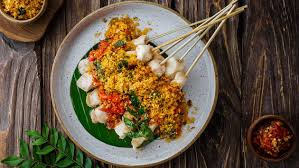
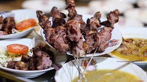

Resep sate yang muhad sekali dibuat dan praktis. Dengan bahan dasar daging ayam, tidak mengurangi ke-khasan makanan tersebut.Ditambahkan dengan saus tiram, ketumbar, madu, kecap manis, dan daun jeruk. Daging ayam yang direndam dengan saus tiram membuat bumbunya meresap ke dalam. Disantap dengan nasi dan sambal kecap, sate Lecker makin berasa enaknya!.

Sate Taichan
Sate Taichan
Sate Taichan adalah Varian sate yang berisi daging ayam yang dibakar tanpa baluran bumbu kacang atau kecap seperti sate pada umumnya. Sate ini hanya disajikan dengan sambal dan jeruk nipis, sedangkan daging sate taichan berwarna putih polos dan hanya dibumbui garam, jeruk nipis, dan sedikit cabai. Dengan rasanya yang pedas, sate taichan menjadi idaman para pecinta kuliner yang ingin mencoba menyantapnya.

Sate Klathak
Sate Klathak
Sate klathak adalah sebuah hidangan sate kambing asal kecamatan Pleret, Kabupaten Bantul, Yogyakarta. Nama tersebut berasal dari bahasa jawa "Klathak" yang berarti membakar sate di pembakaran terbuka. Sate ini sangat berbeda dari kebanyakan sate yang kita jumpai, tusukan yang dipakai untuk memanggang dan membakar terbuat dari besi, tak seperti sate lainnya yang menggunakan tusukan bambu. Tusukan besi sebagai penghangat akan membaut dagin lebih masak dari bagian dalam. Sate tersebut paling enak disajikan dengan gulai.